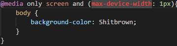

Improvise, Adapt, Overcome
Vad och varför?
Adaptivitet innebär att utseendet på hemsidan varierar beroende på hur stort skärmen är på mackapären som vill visa din hemsida. Genom att göra din hemsida adaptiv blir den mycket trevligare för andra att kolla på. En bra tumregel är att göra den för tre stycken storlekar: Desktop Tablet Phone
Hur?
För att göra en hemsida adaptiv behöver du bemästra en enkel css teknik: @media (media quiery) Med @media kan du sätta gränser för till exempel skärmstorlek så att koden för desktop överskrivs med en annan kod som endast gäller inom dina satta gränser. För att använda @media måste du först ha med < meta name="viewport" content="width=device-width, initial-scale=1.0"> innanför din "head".
Exempel:
Max-device-width innebär att om mackapären har en skärm som är större än 1px bred då kommer bakgrundsfärgen bytas till shitbrown.
